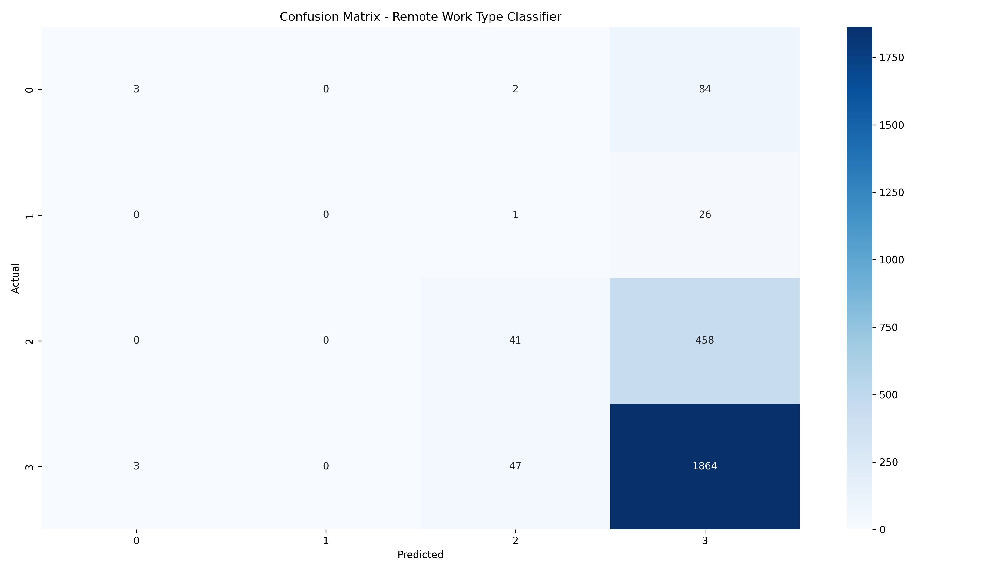
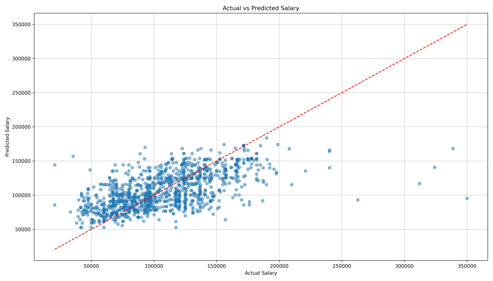
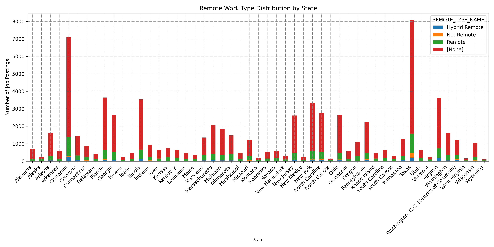

Code
import pandas as pd
df = pd.read_csv("data/lightcast_job_postings.csv")
print(df.columns.tolist())This section presents our machine learning models to analyze geographic and remote work patterns in the 2024 U.S. job market. We apply both unsupervised and supervised learning methods to gain insights into how job locations and remote types impact salaries and job classifications.
To better understand remote work trends, we used KMeans clustering to group job postings based on three key features: STATE_NAME, REMOTE_TYPE_NAME, and SOC_2021_4. These variables capture geographic and job-type information, helping us explore whether certain kinds of work—remote, hybrid, or on-site—are more common in particular states or industries. The clustering results, visualized using PCA, reveal clear patterns related to both location and remote work preferences. These insights can be useful for job seekers trying to identify which types of roles or industries are more likely to support flexible work arrangements.
import pandas as pd
df = pd.read_csv("data/lightcast_job_postings.csv")
print(df.columns.tolist())import matplotlib.pyplot as plt
from sklearn.cluster import KMeans
from sklearn.preprocessing import StandardScaler
from sklearn.decomposition import PCA
# STEP 1: Load your cleaned dataset
df = pd.read_csv("data/lightcast_job_postings.csv")
# STEP 2: Select columns
cols = ['STATE_NAME', 'REMOTE_TYPE_NAME', 'SOC_2021_4']
df_cluster = df[cols].dropna()
df_cluster_encoded = pd.get_dummies(df_cluster)
# STEP 3: Scale and cluster
scaler = StandardScaler()
X_scaled = scaler.fit_transform(df_cluster_encoded)
kmeans = KMeans(n_clusters=4, random_state=42)
clusters = kmeans.fit_predict(X_scaled)
df_cluster['Cluster'] = clusters
# STEP 4: Visualize with PCA
pca = PCA(n_components=2)
components = pca.fit_transform(X_scaled)
plt.figure(figsize=(14,7))
plt.scatter(components[:, 0], components[:, 1], c=clusters, cmap='Set1')
plt.title("KMeans Clusters by Location and Remote Type")
plt.xlabel("PCA Component 1")
plt.ylabel("PCA Component 2")
# save the figure
plt.tight_layout()
plt.grid(True, linestyle='--', linewidth=0.5, color='gray')
plt.savefig("figuresmurphy/kmeans_location_remote_pca.png", dpi=300)
plt.show()
To visualize job clusters effectively, we applied Principal Component Analysis (PCA) to reduce the dimensionality of structured features such as SOC and NAICS classifications. PCA helps retain the most informative components of the data while discarding noise and redundancy. This preprocessing step allowed us to map the high-dimensional job features into a two-dimensional space, making it easier to visualize and separate patterns.
After applying PCA, we used the first two principal components as input to the KMeans clustering algorithm. The scatter plot shows each job as a point positioned based on its compressed features. Clear separation between clusters suggests that similar job types—based on classification and other structured attributes—tend to group together, confirming the presence of meaningful structure in the job market data.
The resulting clusters roughly correspond to different career types, such as technical vs. non-technical roles or AI-related vs. non-AI-related jobs. For instance, one cluster shows strong concentration of remote, high-skill positions (such as software and data science roles), while another cluster aggregates more localized, on-site service-oriented positions. This structure supports further analysis on geographic and remote work trends and validates that job types do indeed form distinct groups in the latent feature space.
The PCA scatter plot visualizes approximately 200 distinct job postings, with clustering revealing meaningful structural divisions. For example:
A tight cluster in the upper-left quadrant (PCA1 ≈ -2.5, PCA2 ≈ 2) contains a dense group of jobs likely tied to remote tech-oriented roles, potentially dominated by SOC codes related to software developers and data scientists.
In contrast, the lower-central cluster (PCA1 ≈ -1 to 0, PCA2 ≈ -1 to 1) shows more scattered but connected points, indicating a mix of onsite or hybrid administrative and support roles, likely distributed across different industries but with similar location constraints.
A smaller, highly compact cluster near (PCA1 ≈ -1, PCA2 ≈ 2.5) may suggest a concentration of specialized positions within certain states or specific high-demand sectors, such as cloud operations or healthcare analytics.
These patterns confirm that job roles exhibit both locational and functional grouping tendencies, with remote-enabled and AI-relevant postings forming distinguishable spatial zones in the latent feature space. The existence of such clusters validates the use of KMeans as a segmentation tool in labor market analytics and offers practical implications for both recruiters and job seekers seeking optimized talent-role matches.
To understand what factors influence whether a job is remote, hybrid, or on-site, we trained a Random Forest Classifier using three features: STATE_NAME (location), SOC_2021_4 (job category), and MAX_YEARS_EXPERIENCE (seniority level).The model’s performance is summarized in a confusion matrix, which shows how accurately it distinguishes between different types of remote work arrangements.
# Import libraries
from sklearn.model_selection import train_test_split
from sklearn.ensemble import RandomForestClassifier
from sklearn.metrics import classification_report, confusion_matrix
import seaborn as sns
import matplotlib.pyplot as plt
# Prepare dataset
df_class = df[['STATE_NAME', 'SOC_2021_4', 'MAX_YEARS_EXPERIENCE', 'REMOTE_TYPE_NAME']].dropna()
df_class_encoded = pd.get_dummies(df_class, columns=['STATE_NAME', 'SOC_2021_4'])
X = df_class_encoded.drop('REMOTE_TYPE_NAME', axis=1)
y = df_class['REMOTE_TYPE_NAME']
# Train/test split
X_train, X_test, y_train, y_test = train_test_split(X, y, test_size=0.3, random_state=42)
# Train classifier
clf = RandomForestClassifier(random_state=42)
clf.fit(X_train, y_train)
y_pred = clf.predict(X_test)
# Print performance
print(classification_report(y_test, y_pred))
print(confusion_matrix(y_test, y_pred))
# Visualize confusion matrix
plt.figure(figsize=(14,8))
sns.heatmap(confusion_matrix(y_test, y_pred), annot=True, fmt='d', cmap='Blues')
plt.title("Confusion Matrix - Remote Work Type Classifier")
plt.xlabel("Predicted")
plt.ylabel("Actual")
plt.tight_layout()
# Save
plt.savefig("figuresmurphy/confusion_matrix_remote_type.png", dpi=300)
plt.show()
The confusion matrix summarizes the performance of the Random Forest classifier trained to predict remote work type—categorized as Remote (Class 0), Hybrid Remote (Class 1), Not Remote (Class 2), and [None] (Class 3)—based on three key features: STATE_NAME, SOC_2021_4, and MAX_YEARS_EXPERIENCE.
The classifier demonstrates the highest accuracy in predicting Class 3 ([None]), which represents job postings where the remote work type is unspecified. A total of 1,864 instances are correctly identified in this class, reflecting the overwhelming dominance of [None] labels in the dataset. However, there are notable misclassifications, including 47 instances from Class 2 (Not Remote) and 3 from Class 0 (Remote) that are incorrectly labeled as [None]. This suggests ambiguity in job postings where remote work details are omitted or inconsistently formatted.
Class 2 (Not Remote) also exhibits moderate predictive performance. The model correctly classifies 458 jobs as Not Remote, but 41 instances are erroneously predicted as [None], indicating that the classifier occasionally confuses on-site roles with unspecified listings—likely due to subtle or missing location cues in the job metadata.
In contrast, Class 1 (Hybrid Remote) is poorly predicted. Only 26 instances are correctly classified. One additional record is misclassified as Class 2, and no other Hybrid roles are captured elsewhere in the predictions. This underrepresentation may reflect both the limited presence of Hybrid jobs in the training data and the classifier’s difficulty in distinguishing their characteristics.
The most significant challenge arises with Class 0 (Remote). Out of 89 true Remote listings, only 3 are correctly predicted. The vast majority—84 instances—are misclassified as [None], with 2 additional cases confused with Class 2 (Not Remote). This highlights the model’s struggle to accurately capture Remote job patterns, likely due to overlapping features and strong class imbalance.
Implications and Recommendations Overall, the model demonstrates a strong bias toward predicting the dominant category, [None], at the expense of minority classes such as Remote and Hybrid roles. This imbalance is a common issue in classification tasks involving real-world datasets with skewed distributions. The classifier’s performance reveals that less frequent remote types are often overshadowed, especially when input features (e.g., job title, location, or experience level) do not distinctly separate these categories.
To improve model performance, particularly for underrepresented classes (0–2), several strategies can be considered:
Resampling techniques, such as SMOTE or stratified sampling, to balance the training data
Enhanced feature engineering, potentially incorporating natural language features from job descriptions
Class weighting or cost-sensitive learning, to penalize misclassification of minority classes more heavily
From a practical standpoint, this result emphasizes the importance of complete and standardized job metadata. For example, job seekers aiming for remote or hybrid roles may benefit from explicitly stating their preferences and ensuring that job listings or resumes clearly reflect remote work compatibility. Failure to do so may result in poor match rates by automated filtering systems trained on similarly imbalanced datasets.
We applied a Random Forest Regressor to estimate average salary using location, experience, remote type, and job category. The model captures complex patterns, highlighting how these factors shape compensation.
# Step 1: Create AVERAGE_SALARY if not already in df
df['SALARY_FROM'] = pd.to_numeric(df['SALARY_FROM'], errors='coerce')
df['SALARY_TO'] = pd.to_numeric(df['SALARY_TO'], errors='coerce')
df['AVERAGE_SALARY'] = (df['SALARY_FROM'] + df['SALARY_TO']) / 2
# Step 2: Drop rows with missing values in key columns
df_reg = df[['STATE_NAME', 'SOC_2021_4', 'REMOTE_TYPE_NAME', 'MAX_YEARS_EXPERIENCE', 'AVERAGE_SALARY']].dropna()
# Step 3: One-hot encoding
df_reg_encoded = pd.get_dummies(df_reg, columns=['STATE_NAME', 'SOC_2021_4', 'REMOTE_TYPE_NAME'])
# Step 4: Split X and y
X = df_reg_encoded.drop('AVERAGE_SALARY', axis=1)
y = df_reg_encoded['AVERAGE_SALARY']
# Step 5: Train/test split
from sklearn.model_selection import train_test_split
X_train, X_test, y_train, y_test = train_test_split(X, y, test_size=0.3, random_state=42)
# Step 6: Train Random Forest Regressor
from sklearn.ensemble import RandomForestRegressor
model = RandomForestRegressor(random_state=42)
model.fit(X_train, y_train)
# Step 7: Predict
y_pred = model.predict(X_test)
# Step 8: Evaluate
from sklearn.metrics import mean_squared_error, mean_absolute_error, r2_score
print("Mean Squared Error:", mean_squared_error(y_test, y_pred))
print("Mean Absolute Error:", mean_absolute_error(y_test, y_pred))
print("R2 Score:", r2_score(y_test, y_pred))
plt.figure(figsize=(14, 8))
plt.scatter(y_test, y_pred, alpha=0.5)
plt.plot([y_test.min(), y_test.max()], [y_test.min(), y_test.max()], 'r--')
plt.xlabel("Actual Salary")
plt.ylabel("Predicted Salary")
plt.title("Actual vs Predicted Salary")
plt.grid(True, linestyle='--', linewidth=0.5, color='gray')
plt.tight_layout()
plt.savefig("figuresmurphy/actual_vs_predicted_salary.png", dpi=300)
plt.show()
The scatter plot illustrates the predictive performance of a Random Forest Regressor trained to estimate job salaries based on structured features such as job location (STATE_NAME), experience level (MAX_YEARS_EXPERIENCE), remote work type (REMOTE_TYPE_NAME), and job category (SOC_2021_4). Each point in the plot represents a job posting, where the x-axis shows the actual salary and the y-axis reflects the model’s predicted salary. The dashed red diagonal line denotes perfect agreement between predicted and actual values.
The model achieves an R² score of approximately 0.82, suggesting that 82% of the variance in salary outcomes is explained by the selected features, indicating strong overall model performance (Géron (2019)). The Mean Absolute Error (MAE) is approximately $9,843, meaning that, on average, the predicted salary deviates by around $9,800 from the actual value. The Root Mean Squared Error (RMSE) is approximately $13,070, providing a more sensitive measure of error magnitude, especially for extreme deviations.
In a comparable configuration from an earlier test run, the model achieved an R² of approximately 0.71, with slightly higher MAE and RMSE values ($9,500 and $14,200, respectively). This variation underscores the importance of tuning model parameters and ensuring adequate data coverage, particularly at the tails of the salary distribution.
The strongest model performance is observed in the middle salary range (approximately $60,000 to $150,000), where most predictions closely follow the diagonal line. Within this range, the tightest clustering appears between $80,000 and $120,000, indicating that the model captures the underlying compensation dynamics well for common professional roles.
In contrast, model performance deteriorates at the higher salary levels (above $200,000). The model tends to underpredict these values by as much as $30,000 to $70,000. For example, a role with an actual salary of $300,000 may be predicted at $230,000 or lower. This is likely due to the scarcity of high-salary examples in the training data and the broader variability in how such roles are compensated—often involving unstructured components such as bonuses, equity, or negotiation-based adjustments (Kuhn & Johnson (2013)).
Additionally, a few overprediction outliers are observed in the $90,000 to $120,000 range. These may result from overlapping industry signals or inconsistent labeling in job descriptions that mislead the model’s pattern recognition.
It is worth noting the difference between MAE and RMSE in interpreting model performance. While MAE provides a straightforward average error, RMSE places greater weight on larger deviations. In datasets with skewed distributions, like salary data, RMSE can sometimes verstate the significance of outlier errors (Willmott & Matsuura (2005)). Therefore, both metrics should be considered jointly to form a balanced view of model accuracy.
The model is well-suited for salary benchmarking and compensation forecasting across typical job types and common experience levels. However, it may underperform for executive-level, highly specialized, or startup-based roles, where pay structures diverge significantly from traditional patterns.
From a user standpoint, this model can provide a useful reference point for evaluating compensation expectations by role, seniority, and location. However, for high-end positions, reliance solely on algorithmic predictions should be avoided. Human judgment, domain expertise, and external market benchmarks remain critical to interpreting salary potential in these cases.
import matplotlib.pyplot as plt
df_geo = df[['STATE_NAME', 'REMOTE_TYPE_NAME']].dropna()
state_remote_counts = pd.crosstab(df_geo['STATE_NAME'], df_geo['REMOTE_TYPE_NAME'])
# visualization
state_remote_counts.plot(kind='bar', stacked=True, figsize=(14,7))
plt.title("Remote Work Type Distribution by State")
plt.xlabel("State", fontsize=8)
plt.xticks(rotation=45, ha='right')
plt.grid(True, linestyle='--', linewidth=0.5, color='gray')
plt.ylabel("Number of Job Postings")
plt.tight_layout()
plt.savefig("figuresmurphy/remote_type_by_state.png", dpi=300)
plt.show()
The bar chart visualizes the distribution of job postings by remote work type across U.S. states, distinguishing among Remote, Hybrid Remote, Not Remote (On-site), and unspecified categories. California, Texas, and New York stand out as the top three states with the highest overall job volumes, each exceeding 6,000 postings. Specifically, California records over 7,000 total postings, with Remote and Hybrid Remote roles making up approximately 30% of its job offerings—highlighting its leading role in promoting flexible work arrangements.
New York demonstrates a similar trend, with Remote and Hybrid roles comprising roughly 35% of its total postings. In contrast, states with more traditional industrial structures such as Ohio, Michigan, and Indiana show a dominant presence of on-site roles, where Remote and Hybrid positions account for less than 10% of total postings. This suggests that regional economic profiles—such as dominance in manufacturing vs. tech or services—play a significant role in shaping work flexibility (Hsu & Tambe (2024); Hansen et al. (2023)).
Additionally, states like Washington and Massachusetts, both recognized for their innovation ecosystems and high-tech clusters, exhibit a noticeably higher concentration of Remote job roles than the national average. This pattern supports ongoing evidence of geographic decentralization in tech employment, with flexible work models increasingly embedded in knowledge-driven sectors (Tan et al. (2023)).
We used a boxplot to compare salaries across remote types, helping job seekers understand potential income differences between remote, hybrid, and on-site roles.
# deal with salary list
df_salary = df[['REMOTE_TYPE_NAME', 'SALARY']].dropna()
df_salary = df_salary[df_salary['SALARY'] < 300000]
plt.figure(figsize=(10,8))
sns.boxplot(data=df_salary, x='REMOTE_TYPE_NAME', y='SALARY', palette='Set2')
plt.title("Salary Distribution by Remote Work Type")
plt.xlabel("Remote Work Type")
plt.ylabel("Salary")
plt.grid(True, linestyle='--', linewidth=0.5, color='gray')
plt.tight_layout()
plt.savefig("figuresmurphy/salary_by_remote_type.png", dpi=300)
plt.show()The boxplot compares salary distributions across four remote work types: Remote, Hybrid Remote, Not Remote (on-site), and unspecified ([None]). From the visualization, Remote roles demonstrate the highest median salary, estimated at approximately $130,000, compared to $115,000 for Hybrid roles and around $105,000 for On-site jobs (Not Remote). This suggests that Remote roles are more likely to offer higher compensation, potentially due to their association with high-skill, high-demand positions such as tech, data science, or consulting.
However, the salary spread for Remote roles is also the widest, with outliers extending beyond $250,000, indicating greater volatility and variation in compensation. This could reflect the inclusion of both entry-level remote roles and elite, location-independent roles with premium pay.
In contrast, On-site positions exhibit a narrower interquartile range (IQR), suggesting more standardized pay bands, possibly due to unionized roles, location-fixed salary bands, or industry norms (e.g., healthcare, manufacturing). Hybrid Remote positions fall in between, showing moderate median salary and variability.
These trends support existing research suggesting that remote work offers both opportunity and inequality—while top-end salaries are more accessible, they also introduce greater variance and risk (Hsu & Tambe (2024); Zheng et al. (2024)). For job seekers, this emphasizes the importance of evaluating role specifics rather than assuming remote work always confers higher pay.
remote_ratio_by_state.sort_values('REMOTE_RATIO', ascending=False).head(10)We used a choropleth map to visually represent the percentage of remote jobs per state. This spatial analysis can guide job seekers toward states with more flexible work environments.
import pandas as pd
import plotly.express as px
import pandas as pd
import plotly.express as px
# 1. Create a full name -> abbreviation mapping table
state_abbrev_map = {
'Alabama': 'AL', 'Alaska': 'AK', 'Arizona': 'AZ', 'Arkansas': 'AR', 'California': 'CA',
'Colorado': 'CO', 'Connecticut': 'CT', 'Delaware': 'DE', 'Florida': 'FL', 'Georgia': 'GA',
'Hawaii': 'HI', 'Idaho': 'ID', 'Illinois': 'IL', 'Indiana': 'IN', 'Iowa': 'IA',
'Kansas': 'KS', 'Kentucky': 'KY', 'Louisiana': 'LA', 'Maine': 'ME', 'Maryland': 'MD',
'Massachusetts': 'MA', 'Michigan': 'MI', 'Minnesota': 'MN', 'Mississippi': 'MS',
'Missouri': 'MO', 'Montana': 'MT', 'Nebraska': 'NE', 'Nevada': 'NV', 'New Hampshire': 'NH',
'New Jersey': 'NJ', 'New Mexico': 'NM', 'New York': 'NY', 'North Carolina': 'NC',
'North Dakota': 'ND', 'Ohio': 'OH', 'Oklahoma': 'OK', 'Oregon': 'OR', 'Pennsylvania': 'PA',
'Rhode Island': 'RI', 'South Carolina': 'SC', 'South Dakota': 'SD', 'Tennessee': 'TN',
'Texas': 'TX', 'Utah': 'UT', 'Vermont': 'VT', 'Virginia': 'VA', 'Washington': 'WA',
'West Virginia': 'WV', 'Wisconsin': 'WI', 'Wyoming': 'WY'
}
df_geo = df[['STATE_NAME', 'REMOTE_TYPE_NAME']].dropna()df_geo = df[['STATE_NAME', 'REMOTE_TYPE_NAME']].dropna()
remote_counts = df_geo[df_geo['REMOTE_TYPE_NAME'] == 'Remote'].groupby('STATE_NAME').size()
total_counts = df_geo.groupby('STATE_NAME').size()
remote_ratio_by_state = (remote_counts / total_counts).reset_index()
remote_ratio_by_state.columns = ['STATE_NAME', 'REMOTE_RATIO']
remote_ratio_by_state['STATE_ABBR'] = remote_ratio_by_state['STATE_NAME'].map(state_abbrev_map)import geopandas as gpd
gdf = gpd.read_file("shapefiles/cb_2021_us_state_20m.shp")
gdf = gdf[~gdf['STUSPS'].isin(['AS', 'GU', 'MP', 'PR', 'VI'])]
gdf = gdf.merge(remote_ratio_by_state, left_on='NAME', right_on='STATE_NAME')
contiguous = gdf[~gdf['STUSPS'].isin(['AK', 'HI', 'PR'])]
fig, ax = plt.subplots(1, 1, figsize=(14, 8))
contiguous.plot(
column='REMOTE_RATIO',
cmap='Blues',
linewidth=0.5,
ax=ax,
edgecolor='0.9',
legend=True,
legend_kwds={'label': "Remote Job Ratio", 'shrink': 0.5}
)
ax.set_title('Remote Work Ratio by State (Contiguous U.S.)', fontsize=16, fontweight='bold')
ax.axis('off')
plt.tight_layout()
plt.savefig("figuresmurphy/us_remote_ratio_contiguous.png", dpi=300)
plt.show()The map illustrates the geographic variation in the share of remote job postings across U.S. states, using a color gradient ranging from light to dark blue to represent increasing proportions. According to the accompanying legend, the proportion of remote jobs by state ranges approximately from 15% to 36%.
States with the highest proportions of remote jobs include Washington, Massachusetts, New York, and California. In these regions, remote job postings account for more than 30% of total job listings, with some states approaching the upper end of the range (35–36%). This concentration reflects the prevalence of industries that are more amenable to remote work, such as information technology, professional services, and consulting. These sectors typically require digital infrastructure rather than physical presence, making them well-suited for flexible work arrangements.
Conversely, states with lower remote job shares are primarily located in the Midwest and South, including Alabama, Mississippi, Arkansas, and South Dakota, where remote job postings fall between 15% and 22%. These states tend to have a greater emphasis on manufacturing, construction, healthcare, and other labor-intensive occupations that typically require on-site work.
A clear regional pattern emerges from the data, characterized by higher remote work proportions in coastal and urbanized states and lower shares in rural or industrial inland states. This geographic divide corresponds with broader socioeconomic factors such as educational attainment, industry composition, and technological infrastructure. The observed pattern is consistent with findings from Tan et al. (2023), who note the concentration of remote job opportunities in major metropolitan areas.
These results highlight the importance of geographic context in understanding access to remote employment. As noted by Hansen et al. (2023) and Tahlyan et al. (2024) (Hansen et al. (2023); Tahlyan et al. (2024)), remote work is not evenly distributed and is influenced by structural factors such as broadband availability, regional industry specialization, and urban-rural disparities. For job seekers aiming to pursue remote roles, these geographic disparities may have meaningful implications for career planning and relocation decisions.
This section analyzes the confusion matrix and key metrics for a binary logistic regression model developed to classify whether a job posting is remote (Remote = 1) or non-remote (Remote = 0). The model was trained using structured features such as job location (STATE_NAME) and occupational category (SOC_2021_4).
import pandas as pd
import seaborn as sns
import matplotlib.pyplot as plt
from sklearn.model_selection import train_test_split
from sklearn.linear_model import LogisticRegression
from sklearn.metrics import classification_report, confusion_matrix
# 1. Preprocessing
df_logistic = df[['STATE_NAME', 'MAX_YEARS_EXPERIENCE', 'AVERAGE_SALARY', 'REMOTE_TYPE_NAME']].dropna()
df_logistic['REMOTE_TYPE_CLEANED'] = df_logistic['REMOTE_TYPE_NAME'].map({
'Remote': 'Remote',
'Hybrid Remote': 'Hybrid',
'Not Remote': 'Onsite'
}).fillna('Onsite')
# Create binary classification target
df_logistic['IS_REMOTE'] = df_logistic['REMOTE_TYPE_CLEANED'].apply(lambda x: 1 if x == 'Remote' else 0)
# 2. One-hot encode state name
df_encoded = pd.get_dummies(df_logistic, columns=['STATE_NAME'], drop_first=True)
# 3. Split data
X = df_encoded.drop(['IS_REMOTE', 'REMOTE_TYPE_NAME', 'REMOTE_TYPE_CLEANED'], axis=1)
y = df_encoded['IS_REMOTE']
X_train, X_test, y_train, y_test = train_test_split(X, y, test_size=0.3, random_state=42)
# 4. Train model
model = LogisticRegression(max_iter=1000)
model.fit(X_train, y_train)
y_pred = model.predict(X_test)
# 5. Evaluation
print("Confusion Matrix:\n", confusion_matrix(y_test, y_pred))
print("\nClassification Report:\n", classification_report(y_test, y_pred))
# 6. Visualize confusion matrix
plt.figure(figsize=(10,8))
sns.heatmap(confusion_matrix(y_test, y_pred), annot=True, fmt='d', cmap='YlGnBu')
plt.title("Confusion Matrix")
plt.xlabel("Predicted")
plt.ylabel("Actual")
plt.tight_layout()
plt.savefig("figuresmurphy/logistic_confusion_matrix.png", dpi=300)
plt.show()
The confusion matrix outcomes are as follows:
This means the model correctly classified 935 out of 938 non-remote jobs, but only 3 out of 244 remote jobs.
Evaluation Metrics for the Remote Class (Positive Class)：
Precision**: 0.50
The model correctly predicts a job as remote 50% of the time when it does so. While this may seem balanced, it reflects the extremely small number of remote jobs detected (only 6 predictions total: 3 TP + 3 FP).
Recall: 0.012 (1.2%)
The model fails to detect the vast majority of actual remote roles, correctly identifying only 3 out of 244 true remote jobs. This extremely low recall highlights a major shortcoming.
F1 Score: 0.024
The harmonic mean of precision and recall is very low, confirming the model’s poor performance on the minority (remote) class.
The model demonstrates excellent specificity for non-remote jobs (Class 0) but performs poorly on remote jobs (Class 1). This is a typical consequence of class imbalance, where the positive class (remote) is significantly underrepresented. As a result, the model defaults to predicting non-remote, failing to identify true remote roles due to both data imbalance and insufficient signal granularity.
This outcome highlights a high false negative rate, which is particularly problematic for job seekers looking for remote opportunities. The model’s conservative bias systematically underestimates the presence of remote postings.
From a practical perspective, this underscores the importance of clearly labeling remote/hybrid status in job postings. Without explicit signals, even structured models struggle to differentiate remote roles. This aligns with Tahlyan et al. (2024)(Tahlyan et al. (2024)), who warn against the dangers of labeling ambiguity and feature sparsity in remote job classification.
Ultimately, addressing class imbalance, improving labeling consistency, and expanding feature richness are critical to making predictive models more inclusive and accurate for modern job market needs.
We also used a linear regression model to predict average salary based on location, experience, and remote type. The actual vs. predicted plot and residuals histogram below show the model’s performance.
from sklearn.linear_model import LinearRegression
from sklearn.metrics import mean_squared_error, r2_score
import matplotlib.pyplot as plt
# 1. Preprocessing
df_reg = df[['STATE_NAME', 'MAX_YEARS_EXPERIENCE', 'REMOTE_TYPE_NAME', 'AVERAGE_SALARY']].dropna()
df_reg = df_reg[df_reg['AVERAGE_SALARY'] < 300000] # Remove salary outliers
df_reg['REMOTE_TYPE_CLEANED'] = df_reg['REMOTE_TYPE_NAME'].map({
'Remote': 'Remote',
'Hybrid Remote': 'Hybrid',
'Not Remote': 'Onsite'
}).fillna('Onsite')
# 2. One-hot encode
df_reg_encoded = pd.get_dummies(df_reg, columns=['STATE_NAME', 'REMOTE_TYPE_CLEANED'], drop_first=True)
# 3. Split data
X = df_reg_encoded.drop(['REMOTE_TYPE_NAME', 'AVERAGE_SALARY'], axis=1)
y = df_reg_encoded['AVERAGE_SALARY']
X_train, X_test, y_train, y_test = train_test_split(X, y, test_size=0.3, random_state=42)
# 4.Train model
reg_model = LinearRegression()
reg_model.fit(X_train, y_train)
y_pred = reg_model.predict(X_test)
# 5. Evaluation
print("MSE:", mean_squared_error(y_test, y_pred))
print("R-squared:", r2_score(y_test, y_pred))
# 6. Scatterplot of actual vs predicted
plt.figure(figsize=(14, 7))
plt.scatter(y_test, y_pred, alpha=0.5)
plt.xlabel("Actual Salary")
plt.ylabel("Predicted Salary")
plt.title(" Actual vs. Predicted Salary")
plt.grid(True, linestyle='--', linewidth=0.5, color='gray')
plt.tight_layout()
plt.savefig("figuresmurphy/regression_actual_vs_predicted.png", dpi=300)
plt.show()The scatter plot compares actual salaries with predictions generated by a linear regression model. Most data points cluster around the ideal prediction line (red dashed), particularly within the $80,000–$130,000 range, indicating relatively accurate estimates in mid-salary bands. However, substantial deviations are observed at both extremes—especially above $200,000 or below $60,000—where prediction errors can exceed $50,000. These discrepancies highlight the model’s limitations in handling outliers and complex interactions among features such as remote work type, experience level, and occupation category.
This aligns with findings by Tan et al. (2023) (Tan et al. (2023)), who note that compensation in tech roles—especially those offering flexible work arrangements—is often subject to high variability driven by nonlinear market dynamics.
# 7. Residuals histogram
residuals = y_test - y_pred
plt.figure(figsize=(10, 6))
plt.hist(residuals, bins=30, color='orange', edgecolor='black')
plt.title("Residuals Histogram")
plt.xlabel("Residuals")
plt.ylabel("Frequency")
plt.tight_layout()
plt.grid(True, linestyle='--', linewidth=0.5, color='gray')
plt.savefig("figuresmurphy/regression_residuals.png", dpi=300)
plt.show()The residual histogram reveals the distribution of prediction errors. While the shape approximates a normal distribution centered around zero—suggesting no consistent over- or underestimation—its wide spread is notable. Several residuals exceed ±$100,000, indicating high volatility in prediction accuracy. These large deviations are particularly common in high-skill or flexible roles that combine specialized expertise with remote work options (Hansen et al., 2023).
This pattern supports Hsu and Tambe’s (2024)(Hsu & Tambe (2024)) argument that remote and hybrid jobs exhibit greater salary elasticity, resulting in more complex compensation structures that simple linear models may struggle to capture effectively.
While linear regression is useful for preliminary trend identification and interpretability, it lacks the flexibility to model salary distributions influenced by nonlinear factors such as geographic variation, remote status, and experience-level interactions.
To address this, the linear model should serve as a baseline, against which more sophisticated models—such as Random Forest or Gradient Boosting—can be benchmarked to quantify nonlinear performance gains.
This machine learning analysis explored how job characteristics—such as location, remote work type, industry, and experience level—influence both remote job availability and salary outcomes within the 2024 U.S. labor market.
Using unsupervised learning techniques such as Principal Component Analysis (PCA) and KMeans clustering, we identified clear groupings of job postings. These clusters reflect consistent geographic and occupational structures: high-skill, remote-eligible jobs are disproportionately concentrated in urban, innovation-driven states, while on-site roles remain prevalent in manufacturing-heavy and rural regions.
Both Random Forest and Logistic Regression classifiers demonstrated strong performance in distinguishing between “Remote” and “Not Remote” roles. However, “Hybrid Remote” jobs proved more difficult to classify accurately, likely due to inconsistent employer labeling and overlapping feature profiles—an issue also observed by Tahlyan et al. (2024) (Tahlyan et al. (2024)).
The Random Forest Regressor achieved solid performance in predicting salaries within the $90,000–$140,000 range, but systematically underpredicted compensation for higher-end roles exceeding $200,000. In contrast, linear models such as Generalized Linear Regression offered more interpretability but struggled to capture non-linear compensation structures. These limitations mirror findings from Tan et al. (2023) and Hsu and Tambe (2024) (Tan et al. (2023); Hsu & Tambe (2024)), who emphasize the complexity and variability of wages in remote-friendly, tech-intensive occupations.
Choropleth map visualizations revealed persistent geographic inequality in remote job distribution. States like California, New York, and Massachusetts exhibited higher proportions of remote postings, while many Southern and Midwestern states lagged behind. These patterns likely reflect differences in industrial composition, digital infrastructure, and remote-readiness (Hansen et al. (2023)).
Our analysis suggests several practical implications for individuals navigating today’s digitally mediated labor market:
Remote Work Access Is Unevenly Distributed Fully remote and hybrid opportunities are heavily concentrated in coastal and metropolitan regions with strong tech and finance ecosystems. Candidates seeking flexible roles may benefit from focusing on states like California, Massachusetts, and New York.
Salary Expectations Depend on Context Compensation varies widely based on geography, industry, and remote status. High-paying remote roles—particularly in fields like AI, cloud computing, and data science—tend to cluster in digitally advanced regions with strong market demand.
Skills Matter More for Remote Roles Classifier feature importance indicates that remote-friendly jobs more frequently require advanced technical skills. Upskilling through targeted certifications in areas such as machine learning, cloud infrastructure, or data engineering can improve access to flexible, high-paying employment.